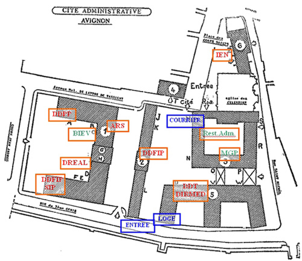

La semaine du 29/07 au 02/08 a été le début des semaines en majorité en autonomie. En effet j’ai eu à terminer une série de mise à jour qui j’avais commencé auparavant.
. En me déplaçant au l’étage de la DDCS pour réaliser ces mises à jour j’ai également dû régler des problèmes que les agents avaient. Donc j’ai passé une majorité du temps à aider les utilisateurs et à mettre à jour un de leurs logiciel, seulement accessible avec un compte administrateur présent dans l’active directory.
M.GUIOT m’a également emmené à la cité administrative d’Avignon qui a la différence de la préfecture de Vaucluse située non loin de cette dernière regroupe la Direction Départementale des Territoires (DDT), La Direction Départementale de la Protection des Populations (DDPP), la DDFIP (direction départementale des finances publiques).
Nous avons dû intervenir sur ce site pour un problème téléphonique. Pour cela nous avons dû déceler d’où provenait la panne, puis trouver comment la régler. Ce qui mènera à une intervention de câblage par la suite. De ce fait M. GUIOT m’a demandé de réaliser une liste de tout le matériel nécessaire à cette intervention.
Lors de la semaine du 05/08 au 09/08 j’ai continué mes missions en autonomie. En effet j’ai eu à régler les différents tickets fait par les agents de la préfecture. Monsieur Olivier Portal m’a également donné une fiche avec certaines machines à renouveler ou à passer en Windows 10, il fallait donc que je sauvegarde certains fichiers personnels et de messagerie sur le serveur, que je redescende l’image de la machine en Windows 10 et enfin retransférer les données.
J’ai également dû préparer un pc de télétravail qui m’a donné du fil à retordre car certaines mises à jour n’étaient pas autorisées par les gpo. J’ai fini par trouver un moyen de contourner ces gpo et a faires ces mises à jour importante et finalement à transférer les données présentes sur le serveur ainsi qu’à installer les logiciels nécessaires à cette machine.